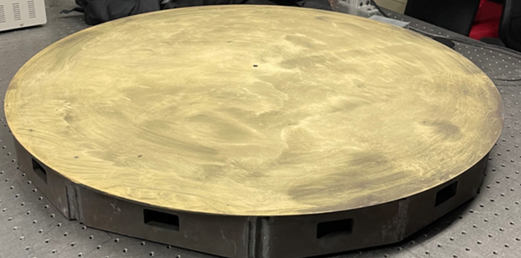
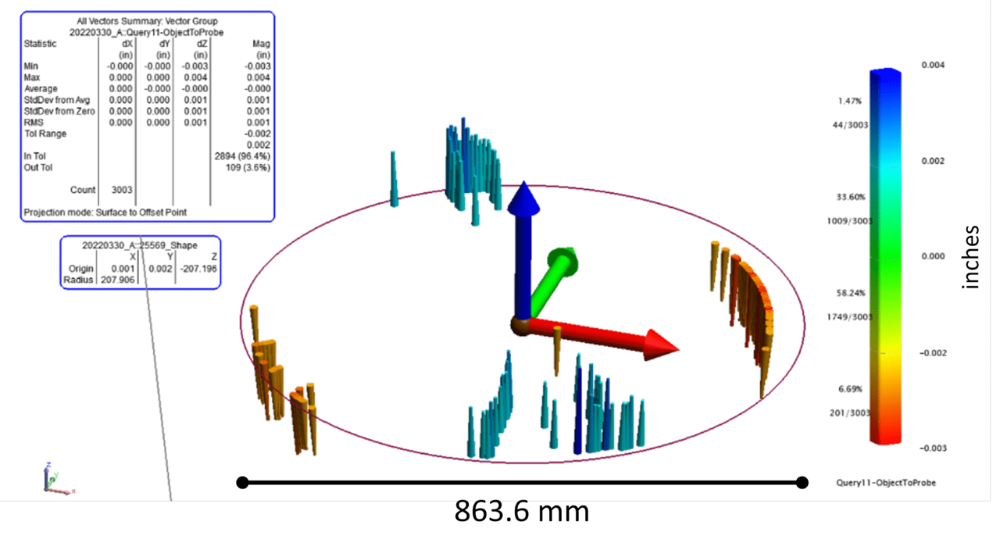
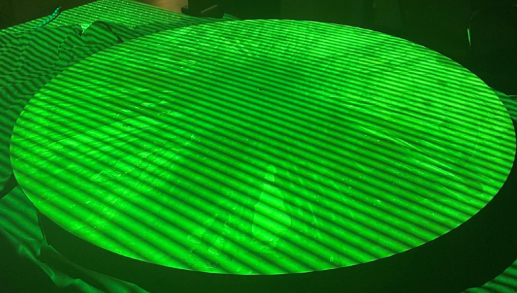
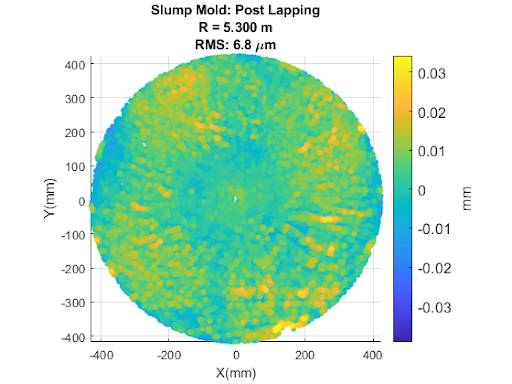

The Large Fiber Array Spectroscopic Telescope (LFAST) is a large telescope concept designed to be scalable. The telescope array is to contain hundreds or thousands of individual “small” 30 inch diameter telescope mirrors. In order to make a large number of 30″ mirrors quickly, LFAST scientists devised methods to utilize a thermal ‘slumping’ process to heat blank sheets of glass and allow gravity to form them over a convex steel mold, example pictured below. After this process, the mirrors can be quickly ground and polished to achieve the ideal final shape and surface finish. However, the farther the mold shape is from the ideal shape, the longer the grinding and polishing process will take to achieve the final mirror. Thus it was imperative to get an accurate measurement of this surface before the forming process begun.

Other Methods
The LFAST team first used a laser tracker. The laser tracker measurement clearly showed some warping in the surface, however with a very limited number of points, and in steps of 0.001″ (~25 µm). This method clearly identified that a problem existed, but didn’t define the problem with enough depth or spatial resolution to be able correct it.

Laser tracker measurement done by a 3rd party on the LFAST mold. Data is given in steps of 0.001″, with about 0.007″ (175 µm) of peak to valley error.
Fringe Measurement
The LFAST team asked us if we could produce a much higher resolution map of the surface to identify any error sources. We used one of our systems with a 1 x 1.5 meter field of view to make a measurement.

Fringe pattern projected onto the LFAST steel mold. Green fringes were used for this measurement to achieve high surface brightness.
It was immediately clear that our system revealed surface errors that had never been seen before. Of course with the best fit sphere removed, we saw the same error as the laser tracker. However, due to the high spatial resolution of our system (over 1 million sample points on the surface) we also uncovered a ‘grid-shaped’ error on the surface. This grid aligned exactly with the grid of welded ribs on the back of the mold surface, and likely caused surface stress during the welding process.

Raw surface measurement (upper left), measurement with best-fit sphere removed (upper middle) and measurement with best fit 3rd order XY polynomial removed (upper right). This clearly revealed an error oriented with the welded rib structure underneath the surface (shown lower right).
Corrective Action
With this new information about the surface, the LFAST team was able to determine a corrective action: heat-treat the steel mold to remove the weld stress, and then run a surface lapping process to remove any further deformations. We measured the mold surface after this corrective process, confirming that a large majority of the warping and grid error had been eliminated, and the RMS error reduced by more than a factor of 3.

Fringe measurement of the LFAST mold post-lapping. The surface accuracy is greatly improved.
← Back to Blog